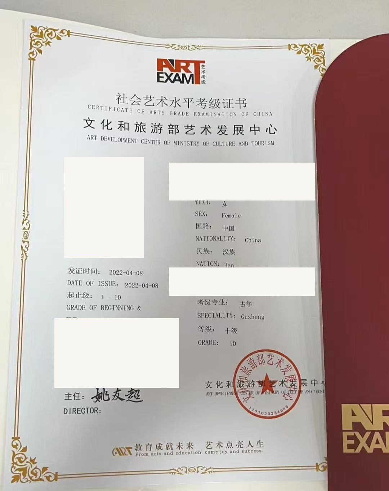
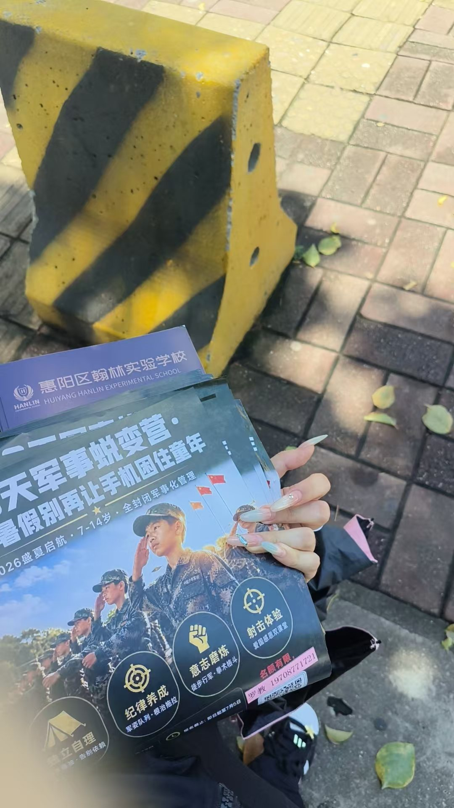
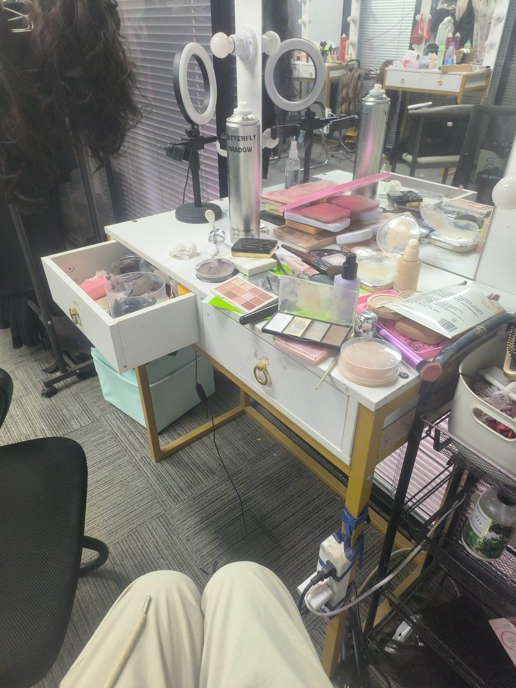
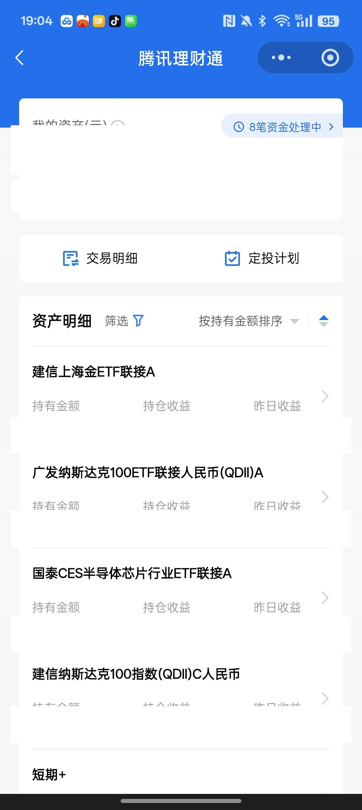

审美与坚持古筝十级
从小学古筝，2022 年 4 月通过社会艺术水平考级古筝十级，文化和旅游部艺术发展中心颁发。
从小学到十级，古筝教会我的不只是指法，还有「把一件事做久」的耐心与对美的判断。
宁波大学 · 国际经济与贸易 · 2026 级
LIN ZHIHAO
从小学古筝、考到十级的国贸新生；高考后的暑假在地推、模特、直播、销售里都试过一遍； 做过主持人、爱看辩论赛，也习惯用 AI 把效率拉满。
About
我是林芷颢，2007 年出生，广东惠州人，现在在宁波读大一。
别人记住我，通常是因为三件事：一件坚持了很久的事、一段什么都敢试的暑假、和一张还算能说清楚的嘴。 至于第四件——我很喜欢把 AI 当成同事用，让它替我做掉重复劳动，把时间留给真正要动脑的部分。
Three traits & one extra
从小学古筝，2022 年 4 月通过社会艺术水平考级古筝十级，文化和旅游部艺术发展中心颁发。
从小学到十级，古筝教会我的不只是指法，还有「把一件事做久」的耐心与对美的判断。
高考结束后的暑假，做过地推、模特、直播、销售，也写过小红书图文文案。社会化程度高，和人打交道不怯场。
比起「想清楚再做」，我更相信「先做起来」。
从小担任主持人，系统学过口才，爱看辩论赛，习惯先把观点拆开再讲出来。
表达对我来说不是天赋，是练出来的肌肉。
擅长使用 AI agent 完成 PPT 制作与效率提升——《泰勒制》13 页课堂汇报，就是我自己用 AI 工具做出来的。
我不只「会用」AI——我更在意怎么让它替我把重复劳动干掉。
Works & Practice

社会艺术水平考级证书 · 文化和旅游部艺术发展中心 · 2022-04-08 发证
13 页 PPT 由我独立用 AI 工具制作完成：理论源流 → 正反案例（福特流水线 / 算法管理）→ 优劣分析 → 当代启示。

街头发传单、现场讲解课程，一天里要和几十个陌生人开口。

化妆间、补光灯、换装的间隙——镜头前的工作，和想象中不太一样。
自己写稿、自己出镜、自己剪的宠物洁牙产品推广口播视频——这里是成片里的两帧。目前在学 AI 自动化剪辑工作流，想把「写稿 → 拍摄 → 剪辑」这条链路跑得更快。

黄金、纳斯达克 100、半导体芯片等 ETF 联接基金，从很小的金额开始试。（持仓金额已打码）
Reading · Tools · Music
帮我区分感性直觉和理性判断，做策划、做选择时不容易被情绪牵着走。
抛开难懂的金融公式，读懂财富背后人的心态，适合慢慢建立长期理财观念。
学沟通和换位思考，面谈、地推、运营社群都能用得上。
我的常用创作工具：写稿、生成画面、打磨方案，把想法快速落地。
本地 AI 助手，适合批量处理素材、解析视频、整理作品集，做项目筹备很省心。
焦虑慌乱的时候听，提醒自己稳住节奏，慢慢呼吸、继续往前走。
Say hello